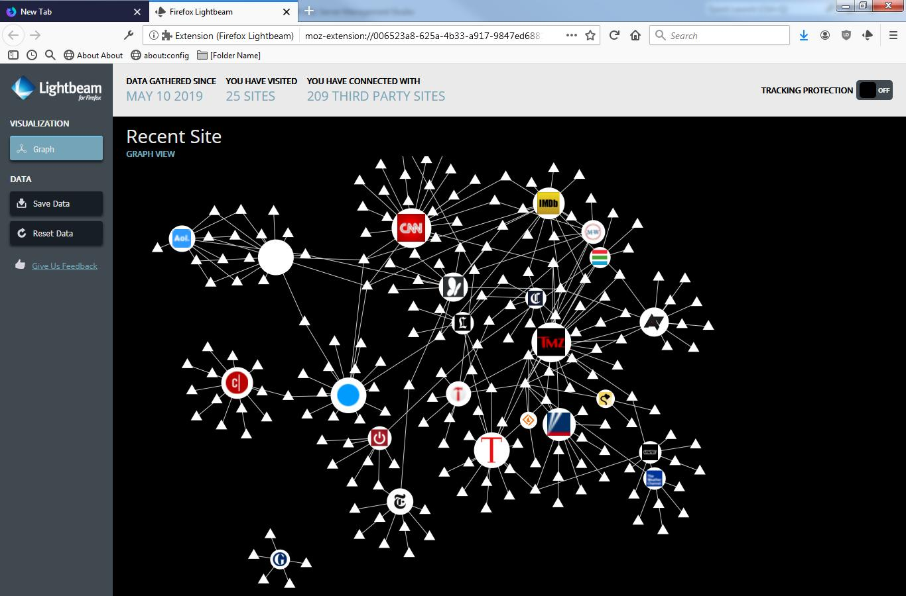

Why rely on cookie attribution is a bad idea in 2022 ? Digital attribution is the process by which advertisers have a view on which advertising investment drives growth. This process hasn’t change for about 15 years, and is today outdated. Those who trust those reports without questioning the process take business, security & legal risks. Why ? That’s the topic of that 5 posts series. This is the first, setting the scene and discussing about privacy.
What are cookies ?
Cookies are small text files stored on your browser. They are used to store data about you, the most often an identifier. It allows the server to recognise you (your browser) each time you connect.
They are used for authentication, convenience, remember parameters you already gave (like language preference). And.. Track users.
You can see them in the menu of your favorite browser, “more tools” - developper tools - application - cookies.

Aggregation of trackers and impact on data privacy
The initial usage of cookies is acceptable : convenience. You don’t have to choose your language over and over again. Fine.
But for adtech purposed, cookies keep a track of what you visit. By accumulation, the tracking providers collect a lot of information about you. What you read, when, how much time. It can evne capture what you write. The javascript can controll your browser (that’s the purpose of the langage). There are only few limits on tracking within a given website.
But the same trackers are present on millions on website. And that’s where privacy is mostly impacted. If a website knows you visit a page, it’s not a big deal. But if a tracker knows you visited successively a medical forum, then on a contact medical center page, they can deduct your sick and what are your symptoms. They share that information with millions of potential advertisers (and their dozens of middle men) to sell ads at the higher cost. At that point, the privacy border is crossed for a long time.
 Most sites share the same trackers, and identifiers. All your history can be represented as a graph (here Lightbeam Firefox add on)
Leglislator response to privacy problem
Europen legislator understood that problem perfectly and regulated a few times:
- 2009 : cookies were tolerated but information must be sent to visitors via a pop up.
- 2018 : GPDR - user consent is required for trackers. Despite the regulation don’t aim cookies, the word “cookie” is quoted only once for example purpose.
- ? : E privacy regulation goes further in privacy protection an reiterate the need for consent.
Consent & optin : implications on marketing
Since 2018, a consent is required to track users. “freely given, specific, informed and unambiguous”.
Benchmarks are not clear about the opt in rate. It’s also optimisable : structured companies constantly review their consent process to increase consents. From my experience, 75% seems reasonable (which is also what https://www.commandersact.com/en/privacy-barometer-2019/ say). But it’s variable and depends on the public and the industry. The https://iapp.org/news/a/yes-how-opt-in-consent-really-works/ - a website for privacy professionnals - states 34% cookies opt in.
Consent hides from 10 to 75% of your soft or hard leads, depending on industry and public. It bias results, erasing the personna “privacy pudic” from your marketing actions.
Presence of a significant (variable and difficult manageable) discrepancy is a problem for digital attribution, and question by itself its validity to estimate media performance without any complementary studies.
Check for part 2 : adblocking and browser’s privacy protection : ATP/ETP/ATT